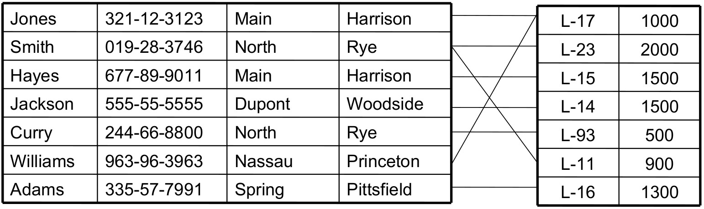
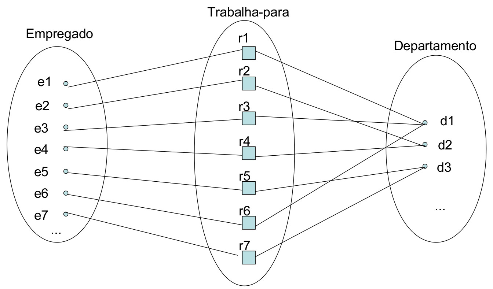

Aula 5 (2019-04-16)
Exercício de ER
-
Uma empresa de bebidas quer automatizar algumas tarefas e processos;
-
Bebidas tem tipos (whiskey, cerveja e suco primeiramente) e volume (mililitros). As bebidas também tem marca;
-
O gerente do estabelecimento quer ver um relatório de vendas por período (dia, semana, mês e ano por exemplo) das bebidas de seu estabelecimento para saber se é preciso aumentar ou diminuir seu estoque nesses períodos apurados. O relatório deve conter bebidas agrupadas por tipo, quantidade vendida no período pertinente;
-
O gerente da empresa quer cadastrar clientes que queiram ser cadastrados no sistema, para sugerir a eles produtos de acordo com o padrão de compra desses clientes. Um cliente tem um nome, data de nascimento, sexo, endereço. Logo, o gerente também quer relatórios de produtos que seus clientes consomem;
-
Bebidas chegam ao estabelecimento por meio de fornecedores, os quais estão espalhados por vários lugares do Brasil. Logo o gerente quer relatórios de onde seus produtos estão sendo adquiridos. O gerente também quer saber quanto tempo leva em média de um determinado fornecedor para que um produto chegue a seu estabelecimento.
Bebida(id, tipo, volume, marca) Venda(id, data) Cliente(id, pnome, unome, nascimento, sexo) Endereço(id, cep, complemento, número) Fornecedor(id, nome)
Relacionamentos
-
Um atributo de uma entidade refere-se a outra entidade;
-
Refinamento: atributos são convertidos em relacionamentos entre as entidades;
-
Um relacionamento é uma associação entre uma ou várias entidades:
- Um relacionamento que associa o cliente H com o empréstimo L-15 especifica que o cliente H é o cliente que realizou o referido empréstimo.
-
Tipo Relacionamento define um conjunto de associações ou um conjunto de relacionamentos entre entidades;
-
A associação entre os conjuntos de entidades é referida como uma participação: o conjunto de entidades E1 , E2 , ..., Em participa do conjunto de relacionamentos R;
-
Grau do relacionamento: o relacionamento binário (envolve dois conjuntos entidades) é um relacionamento de grau 2. E assim por diante;
-
Exemplo:
- Considere os conjuntos de entidades cliente e empréstimo;
- Definimos o conjunto de relacionamentos devedor para denotar a associação entre clientes e empréstimos bancários contraídos pelos clientes.


-
A função que uma entidade desempenha em um relacionamento é chamada papel;
-
Algumas vezes o "conjunto entidade" pode participar de um "conjunto relacionamento" mais de uma vez em papéis diferentes e, nessas situações, o papel é importante para interpretação do modelo.
Mapeamento de Restrições
Mapeamento das cardinalidades expressa o número de entidade às quais outra entidade pode estar associada via um conjunto de relacionamentos.
-
Um para um: uma entidade em A está associada no máximo a uma entidade em B, e uma entidade em B está associada a no máximo uma entidade em A;
-
Um para muitos: Uma entidade em A está associada a várias entidades em B. Uma entidade em B deve estar associada no máximo a uma entidade em A;
-
Muitos para um: Uma entidade em A está associada a no máximo uma entidade em B. Uma entidade em B, pode estar associada a um número qualquer de entidades em A;
-
Muitos para muitos: Uma entidade em A está associada a qualquer número de entidades em B e uma entidade em B está associada a um número qualquer de entidades em A.
Exemplo:
-
Considere o conjunto de entidades empréstimo e o conjunto de entidades pagamento (que mantém todas as informações sobre os pagamentos realizados para um determinado empréstimo);
-
O conjunto de entidades empréstimo é considerado dominante e o conjunto de entidades pagamento é considerado subordinado;
-
Se todas as entidades de um conjunto participam de pelo menos um relacionamento R, este é dito total, se apenas algumas das entidades do conjunto participam do relacionamento, então este é dito parcial;
-
A participação total está estreitamente relacionada à existência de dependência. Para haver dependência de existência, a participação da entidade subordinada ao relacionamento correspondente deve ser total.
Participação total ou parcial
-
Total:
-
Representação: linha dupla;
-
Uma entidade pode existir apenas se participar de, pelo menos, uma instância do relacionamento que tem a restrição;
- Empregado TRABALHA_PARA Departamento.
-
-
Parcial:
-
Representação: linha única;
-
Algumas entidades estarão relacionadas a outra entidade por meio do relacionamento que impõe a restrição.
- Empregado GERENCIA Departamento.
-